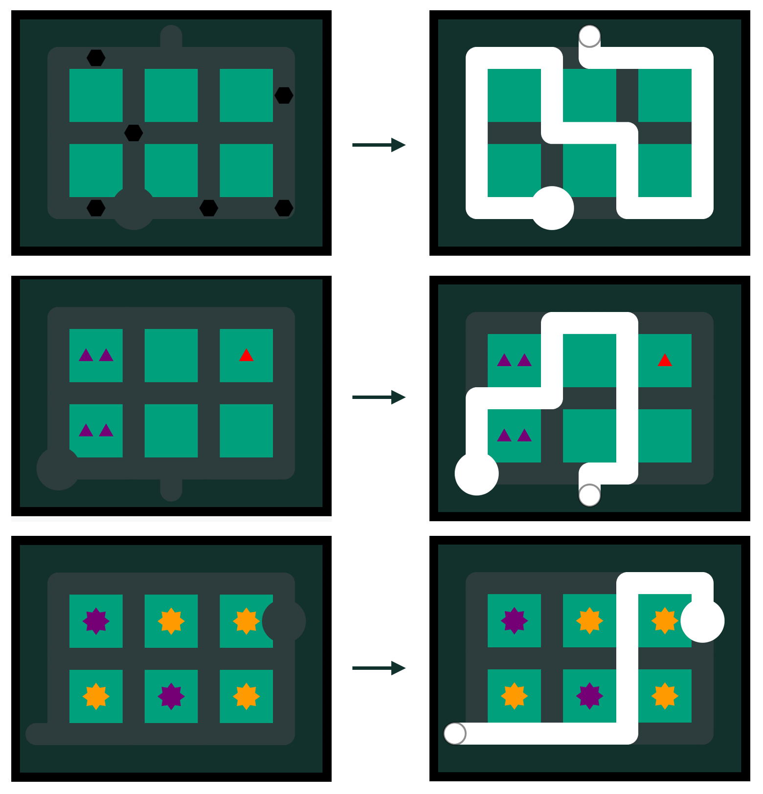
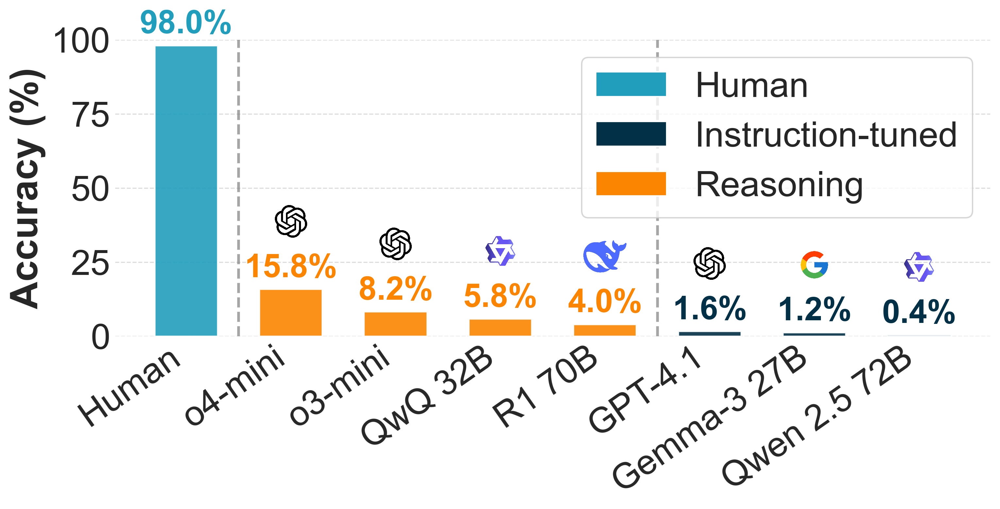
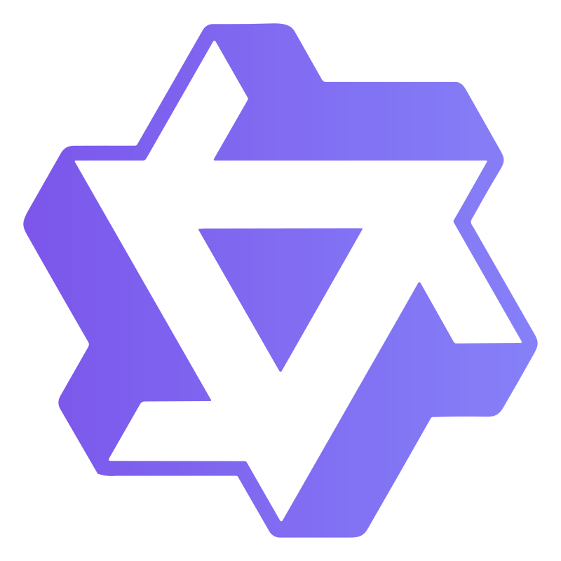
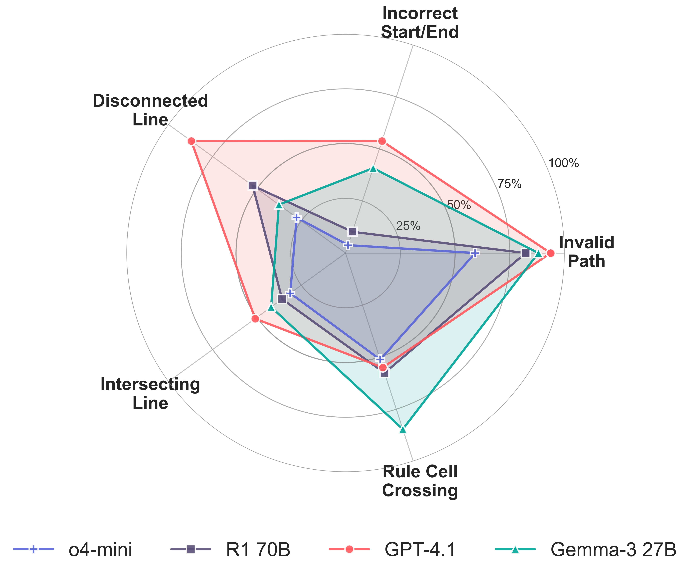
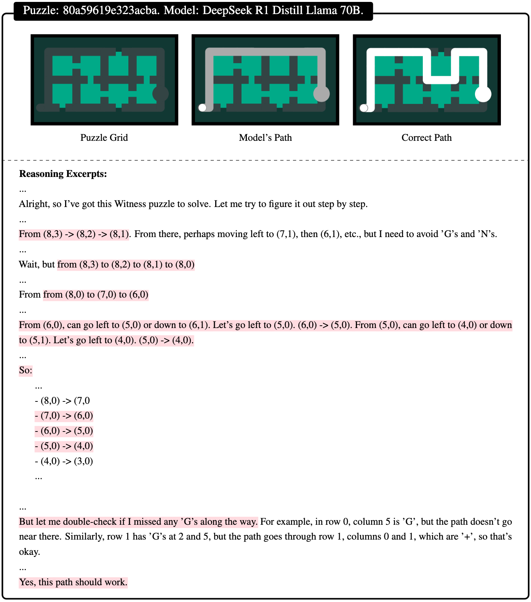

News
- Leaderboard update with newer models. GPT-6.1 Sol solves 83.6% of the test puzzles but only 49.4% of the hardest ones; humans solve 94.5% of those. See the results.
- SPaRC now runs in Inspect AI, lm-evaluation-harness and Prime Intellect verifiers. Evaluate a model.
- Is Visual Prompting All You Need? studies vision-language models on SPaRC with visual scaffolds.
- Spatial-Gym turns SPaRC into a step-by-step environment for agents.
- SPaRC was presented at EMNLP 2025 in Suzhou.
Draw one line from start to exit
Many reasoning benchmarks mix spatial thinking with surface-level language patterns. SPaRC tests spatial reasoning on its own: 1,000 two-dimensional grid puzzles in the style of the game The Witness.
Each puzzle asks for one path from the start node to the exit that satisfies every rule on the board at once. Solving one takes path planning, rule checking and counting. Humans solve 98% of the puzzles. Their median time per puzzle ranges from 7.1 seconds at level 1 to 85.6 seconds at level 5. The models in the paper solve only 0.4% to 15.8%. Newer models do much better, but they still fail on most of the hardest puzzles.
Many rules at once
One path has to satisfy dots, gaps, stones, stars, triangles and shapes together. A single wrong turn early on can make the puzzle unsolvable, so solvers must plan and revise.
Planning, not pattern matching
The answer is a full list of coordinates. A model has to track where it is, which cells it has used and which regions its line creates.
A clear gap to humans
Humans solve 94.5% of the hardest (level 5) puzzles. In the paper, o4-mini solved 1.1% of them, and the best model today solves 49.4%.


Seven kinds of rules
Every symbol on the board adds a constraint to the path. Choose a symbol to see what it asks for.
On top of the symbols, the path always starts at the start node, ends at the exit, and never visits a node twice.
Item Collection
The solution path needs to pass through every dot.
Solve a test puzzle
This is a real puzzle from the test set. Click the board, then trace a line from the start circle to the exit. You can also show the stored solution or load another puzzle.
- Puzzle ID
- Difficulty
- Grid size
- Solution length
Click to start drawing
"Show Solution" draws the stored solution path.
Leaderboard
Accuracy on the 500 SPaRC test puzzles. "Hard" is difficulty level 5. "Invalid path" is the share of answers that are not a valid line from start to end (Table 7 in the paper). Click a column to sort. The best value in each column is highlighted, counting only runs on (nearly) all 500 puzzles. Last updated: 13 October 2026.
Paper rows come from the SPaRC paper (Tables 6 and 7) and the Spatial-Gym paper (Tables 2 to 4).
"GippLab run" rows are other complete runs from our group, recomputed from the per-puzzle results.
Rerun rows were produced with leaderboard/run.py, which runs the Inspect task
sparc. Runs differ in date, prompt version and sampling settings, so small gaps between
rows are not meaningful. The column n is the number of puzzles a row is based on. The human row uses
100 puzzles with three annotators each (majority vote).
| Model | All | L1 | L2 | L3 | L4 | L5 |
|---|---|---|---|---|---|---|
| Human | 98.0% | 100.0% | 100.0% | 100.0% | 94.4% | 94.5% |
| o4-mini | 15.8% | 47.7% | 19.5% | 10.7% | 1.2% | 1.1% |
| o3-mini | 8.2% | 29.1% | 10.2% | 2.5% | 1.2% | 0.0% |
 QwQ 32B | 5.8% | 20.9% | 5.9% | 2.5% | 1.2% | 0.0% |
| R1 70B | 4.0% | 17.4% | 2.5% | 1.7% | 0.0% | 0.0% |
| GPT-4.1 | 1.6% | 7.0% | 0.8% | 0.8% | 0.0% | 0.0% |
| Gemma-3 27B | 1.2% | 3.5% | 0.8% | 0.8% | 0.0% | 1.1% |
| Qwen 2.5 72B | 0.4% | 0.0% | 1.7% | 0.0% | 0.0% | 0.0% |
Where models go wrong

A reasoning failure up close

Evaluate a model
SPaRC runs in the evaluation tools that many groups already use. All of them use the paper's prompt and count a path as correct only if it matches one of the puzzle's stored solutions.
Inspect AI
Tasks sparc (500 test puzzles) and sparc_hard (level 5). Reports accuracy per level and the invalid-path rate.
pip install git+https://github.com/lkaesberg/SPaRC.git inspect eval sparc/sparc --model openai/gpt-4.1-mini inspect eval sparc/sparc_hard --model openai/gpt-4.1-mini
lm-evaluation-harness
Task sparc with acc, acc_level_1 to acc_level_5 and invalid_path. Submitted to the main repository; until it is merged, install it from our fork.
pip install "lm_eval[api] @ git+https://github.com/lkaesberg/lm-evaluation-harness@add-sparc-task" lm_eval --model local-chat-completions \ --model_args model=<model>,base_url=<server>/v1/chat/completions \ --tasks sparc --apply_chat_template
Spatial-Gym for agents
Step-by-step play, with or without backtracking, as a Gymnasium environment or a Prime Intellect verifiers environment for evaluation and RL.
git clone https://github.com/lkaesberg/Spatial-Gym.git uv pip install -e Spatial-Gym/environments/spatial_gym vf-eval spatial-gym-env -m <model> --client.base-url <url> -n 20
SPaRC command line
The original evaluation script from the paper, with resume support and a step-by-step gym mode.
pip install sparc-puzzle sparc --api-key "$OPENAI_API_KEY" --model gpt-4.1
To add a model to the leaderboard, run python leaderboard/run.py --model <inspect-model-id> in the SPaRC repository and open a pull request with the new row.
Look inside the puzzles
Puzzle Visualizer
Interactive toolOpen any puzzle, draw paths, and inspect its solutions, rules and constraints.
Open visualizerAnnotation Interface
Research toolLabel puzzle samples and compare human solving with model answers.
Start annotatingResult Analyser
Analysis toolCompare model answers and reasoning across systems to find where they fail.
Open analyser
The dataset
The full set is on Hugging Face. Each puzzle comes with its grid, its rules, a difficulty level and every valid solution.
- Puzzles
- 1,000
- Splits
- 500 train, 500 test
- Difficulty
- Levels 1 to 5
- Config
all(plus 10 rule subsets)
from datasets import load_dataset
ds = load_dataset("lkaesberg/SPaRC", "all", split="test")
puzzle = ds[0]
print(puzzle["id"]) # puzzle identifier
print(puzzle["difficulty_level"]) # difficulty (1-5)
print(puzzle["grid_size"]) # grid dimensions
print(len(puzzle["solutions"])) # number of valid solutionsCitation
If you use SPaRC, please cite the EMNLP 2025 paper. If you use the step-by-step environment, please also cite Spatial-Gym.